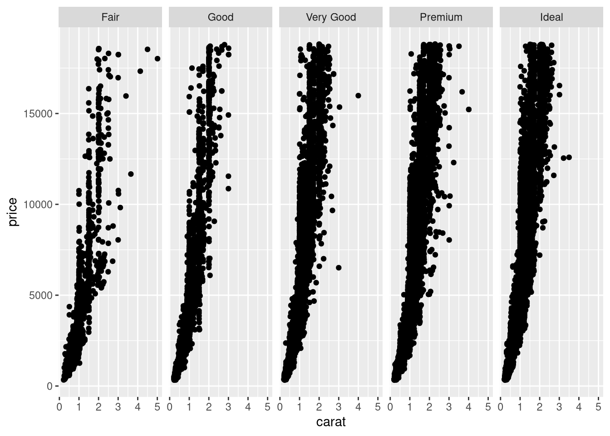

Capítulo 4 Análise de Redes Sociais
O R possui diversos pacotes para análise de rede, como o igraph,
statnet,
e do tidyverse temos
tydygraph e
ggraph.
4.1 O pacote Igraph
Instalando o pacote igraph:
install.packages("igraph") # instalando o pacotechamando o pacote já instalado
library(igraph) # chamando o pacote já instalado
##
## Attaching package: 'igraph'
## The following objects are masked from 'package:stats':
##
## decompose, spectrum
## The following object is masked from 'package:base':
##
## unionPegando o famoso poema de Drummond:
“João amava Teresa que amava Raimundo que amava Maria que amava Joaquim que amava Lili que não amava ninguém”
E o transformando em um grafo (os “gráficos” em análise de rede recebem este nome):
library(igraph)
g <- graph.empty(directed=TRUE) # "directed" implica distinguir entre "de" e "para" na relação entre os nós.
# Adicionando os vértices.
g <- g + vertex("João")
g <- g + vertex("Teresa")
g <- g + vertex("Raimundo")
g <- g + vertex("Maria")
g <- g + vertex("Joaquim")
g <- g + vertex("Lili")
# Especificando as relações entres os vértices, os edges
g <- g + edges("João", "Teresa")
g <- g + edges("Teresa", "Raimundo")
g <- g + edges("Raimundo", "Maria")
g <- g + edges("Maria", "Joaquim")
g <- g + edges("Joaquim", "Lili")
plot.igraph(g) # plotando o grafo
Neste caso, poderíamos ter feito este mesmo grafo com código mais compacto:
library(igraph)
g <- graph.empty(directed=TRUE)
# Adicionando os vértices.
g <- g + vertex(c("João", "Teresa", "Raimundo", "Maria", "Joaquim", "Lili"))
# Adicionando os edges em pares
g <- g + edges(c("João", "Teresa", "Teresa", "Raimundo", "Raimundo", "Maria","Maria", "Joaquim","Joaquim", "Lili"))
plot.igraph(g)
Se o grafo sobe ou desce, pouco importa para nós aqui, importa as pessoas e as relações entre elas. Repare que os edges são entendidos aos pares. Se fizéssemos um vetor sem as devidas repetições, teríamos um gráfico errado das relações:
g <- graph.empty(directed=TRUE)
g <- g + vertex(c("João", "Teresa", "Raimundo", "Maria", "Joaquim", "Lili"))
g <- g + edges(c("João", "Teresa", "Raimundo", "Maria","Joaquim", "Lili"))
plot.igraph(g)
Ou com código modo mais econômico ainda:
g <- graph.formula(
João --+ Teresa --+ Raimundo --+ Maria --+ Joaquim --+ Lili
)
plot(g)
4.1.1 Clusterização
EM CONSTRUÇÃO
4.2 Os pacotes ggraph e tidygraph . Construindo grafos com o tidyverse.
O pacote ggraph é um pacote elaborado por Thomas Lin Pedersen, o mesmo do ggplot2, e pretende ser uma extensão deste, usando a mesma gramática de gráficos, o que nos dá grande flexibilidade visual. Com o ggraph é possível construir graficamente redes, mas ele vai além dos grafos, construindo também dendogramas, diferentes tipos de árvores, matrizes, gráficos hierárquicos, diagrama de arc, sunburst, etc.
Para inserir os dados no ggraph, é necessário colocá-lo no formato “tidy” do “tidyverse”, e fazemos isso com o pacote tidygraph:
Para instalar, usamos os comandos:
install.packages('ggraph')
install.packages('tidygraph')Carregando os pacotes
library(ggraph)
## Loading required package: ggplot2
library(tidygraph)
##
## Attaching package: 'tidygraph'
## The following object is masked from 'package:igraph':
##
## groups
## The following object is masked from 'package:stats':
##
## filterSeguindo o exemplo na página do criador do GGraph
Thomas Lin Pedersen,
vamos usar o dataset highschool do ggraph, que contém dados sobre a evolução da amizade entre garotos numa escola do ensino médio no Illinois, que nos anos de 1957 e 1958 responderam à pergunta:
“Com que colegas desta escola você anda mais frequentemente?”. Esta pesquisa apareceu originalmente nos livros “Introduction to Mathematical Sociology” e “The Adolescent Society”, ambos do sociólogo James Coleman.
Para obter mais informações sobre este dataset, basta digitar no console: help(highschool).
str(highschool) # observando a estrutura do data frame
## 'data.frame': 506 obs. of 3 variables:
## $ from: num 1 1 1 1 1 2 2 3 3 4 ...
## $ to : num 14 15 21 54 55 21 22 9 15 5 ...
## $ year: num 1957 1957 1957 1957 1957 ...head(highschool,10) # observado as primeiras linhas do data frame
## from to year
## 1 1 14 1957
## 2 1 15 1957
## 3 1 21 1957
## 4 1 54 1957
## 5 1 55 1957
## 6 2 21 1957
## 7 2 22 1957
## 8 3 9 1957
## 9 3 15 1957
## 10 4 5 1957Vemos que há na coluna 1 de (“from”) pessoa número X para (“to”) para pessoa Y no ano (“year”). Assim, a pessoa 1 teve contato com as pessoas 14, 15, 21, 54 e 55 em 1957. A pessoa 2 teve contato com as pessoas 21 e 22, e assim por diante.
Vamos preparar os dados para plotar o grafo com ggraph. Antes, é necessário colocá-lo no formato “tidy” do “tidyverse”, e fazemos isso com o pacote tidygraph.
A função as_tbl_graph() do pacote tidygraph funciona como a função grouped_df(), que agrupa nós (nodes) e arestas (edges).
as_tbl_graph(highschool)
## # A tbl_graph: 70 nodes and 506 edges
## #
## # A directed multigraph with 1 component
## #
## # Node Data: 70 x 1 (active)
## name
## <chr>
## 1 1
## 2 2
## 3 3
## 4 4
## 5 5
## 6 6
## # … with 64 more rows
## #
## # Edge Data: 506 x 3
## from to year
## <int> <int> <dbl>
## 1 1 13 1957
## 2 1 14 1957
## 3 1 20 1957
## # … with 503 more rowsVamos criar uma lista chamada “grafo”, adicionando um campo novo com mutate(), de nome “Popularidade” e que vai medir a centralidade de grau através da função centrality_degree() do tidygraph. Centralidade de grau é a medida mais simples de centralidade, que conta o número de conexões, as arestas (“edges”) de cada nó.
grafo <- as_tbl_graph(highschool) %>%
mutate(Popularidade = centrality_degree(mode = 'in'))
grafo
## # A tbl_graph: 70 nodes and 506 edges
## #
## # A directed multigraph with 1 component
## #
## # Node Data: 70 x 2 (active)
## name Popularidade
## <chr> <dbl>
## 1 1 2
## 2 2 0
## 3 3 0
## 4 4 4
## 5 5 5
## 6 6 2
## # … with 64 more rows
## #
## # Edge Data: 506 x 3
## from to year
## <int> <int> <dbl>
## 1 1 13 1957
## 2 1 14 1957
## 3 1 20 1957
## # … with 503 more rowsPlotando o grafo:
ggraph(grafo, layout = 'kk') +
geom_edge_fan(aes(colour = stat(index)), show.legend = FALSE) +
geom_node_point(aes(size = Popularidade, colour= Popularidade), show.legend = TRUE) +
scale_colour_gradient(low = "steelblue", high = "black") +
facet_edges(~year) +
theme_graph(foreground = 'steelblue', fg_text_colour = 'yellow') +
labs(title = "Evolução da amizade entre adolescentes de uma escola no Illinóis",
caption = "Fonte: Elaboração própria a partir dos dados de Coleman(1961) apud ggraph (v.2.0.5; Pedersen)")
layoutdefine como os nós serão alocados. O layout do ggraph possui os mesmos do igraph e outros mais como, hive plots, treemaps e circle packing.kkindica que está sendo usado o algortimo Kamada-Kawai para dispersar os nós e facilitar nossa visualização.geom_edge_fan()desenha os laços de modo curvo. Há diversas outras opções possíveis neste caso, como:geom_edge_arc,geom_edge_bend,geom_edge_diagonal,geom_edge_elbow,geom_edge_fan,geom_edge_hive,geom_edge_link,geom_edge_parallel. Substituageom_edge_fan()por alguns estes e vjea a diferença no grafo.colourindica que a intensidade das ligações será por um gradiente de cor,stat()indica que segue ali uma informação estatística.geom_node_point()mostra os nós como pontos/círculos e permite que sejam plotados em diferentes tamanhos, cores e formas emaes().size = Popularidadeindica que o tamanho dos nós é controlado pela variável “Popularidade” que criamos.colour = Popularidadeindica que além do tamanho, a cor também vaira conforme a popularidade. Para mais opções, digite?geom_node_point()no console ou consulte a documentação do ggraph.scale_colour_gradient(low = "steelblue", high = "black")é opcional, podendo ser retirada. Especifica o gradiente de cores do comando anterior (no caso, nós), qual o valor mais baixo até o mais elevado. Sua informação é redundante com relação ao tamanho dos nós, mas ajuda a reforçar tal informação.facet_edges()função de “faceting”, de criar facetas, gráficos multiplos, e o símbolo de til~seguido deyearindica que o critério aqui são as categorias dentro de ano, que no caso, são 1957 e 1958. Os nós são repetidos em cada painel.theme_graphespecifica as cores das legendas nas facetaslabs(title = "indica o título ecaptiono rodapé.
Veja também
- cheatsheet/folha de dicas do ggraph
- Para ver os diferentes layouts possíves do ggraph e seus respectivos códigos, para além dos grafos clique aqui
CAPÍTULO A SER EXPANDIDO
4.3 Redes de palavras
EM CONSTRUÇÃO
4.4 Redes de citação
EM CONSTRUÇÃO
4.5 Gráfico de centralidade
EM CONSTRUÇÃO
4.6 Comunidades
EM CONSTRUÇÃO
4.7 Sugestões de links
- AQUINO, Jackson A. “Análise de redes sociais”, capítulo 12 de ___. R para cientistas sociais. Ilhéus, BA: EDITUS, 2014. 157 p. ISBN: 978-85-7455-369-6. (PDF gratuito bem introdutório com R)
- HIGGINS, Silvio S.; RIBEIRO, Antônio Carlos. Análise de redes em Ciências Sociais. Brasília: ENAP. 2018. 229p. (PDF Gratuito de livro. Bom para aprender os conceitos/teorias básicos de análise de rede).
- Manual online do ipgraph para R; PDF do Manual do igraph para R (ambos em inglês)
- ggraph Documentation no Cran.
- d’ANDRÉA, Carlos Frederico de Brito. Pesquisando plataformas online: conceitos e métodos. EDUFBA. 2020.
- A obra visa introduzir os Estudos de Plataforma, um campo de estudos que, desde o início da década de 2010, discute as especificidades políticas e materiais das mídias sociais e de outras plataformas online. Datificação, algoritmos, governança e os modelos de negócio das plataformas são algumas das dimensões sintetizadas no livro. De modo didático, o autor apresenta um conjunto de leituras e de experimentações metodológicas conduzidas com um diversificado grupo de colaboradoras(es) no país e no exterior. (ebook PDF e Epub gratuitos)
- RECUERO, Raquel. Introdução à análise de redes sociais online. EDUFBA.2017.
- A Análise de Redes Sociais (ARS) é uma abordagem de pesquisa cuja popularidade tem aumentado nos últimos anos, principalmente, entre os pesquisadores da área de Comunicação. É nesse âmbito que várias obras, entre artigos e livros, vêm surgindo e introduzindo o estudo dessas estruturas a partir da análise de redes e da compreensão da representação dessas redes sociais na internet. Este livro é uma pequena compilação dos principais conceitos e elementos para a compreensão e a aplicação da ARS. É baseado em uma breve apresentação e histórico do paradigma, os principais conceitos, suas métricas e, finalmente, suas formas de representação e visualização. (ebook PDF e Epub gratuitos).
- LIZARDO Omar; JILBERT Isaac. Social Networks: An Introduction. 2021. (ebook online)